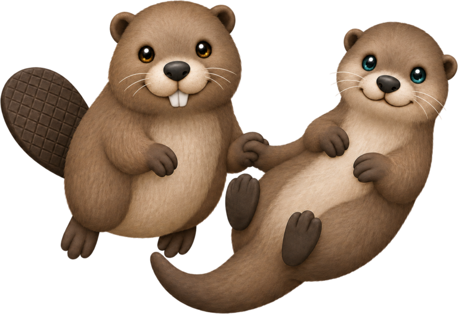

River ecosystem challenge
Two animals. One river. Every choice changes the water.
Play as a beaver or an otter, make decisions across a living river, and discover how clean water connects wildlife, habitat and people.

Play & learn
Choose your river guardian
Each animal experiences the same river differently. Pick one, then respond to ecosystem challenges.
River report
Meet the neighbours
Different lives, shared water
Beavers change landscapes
By building dams, beavers can slow streams and create ponds and wetlands. These habitats can store water, trap sediment and support many species.
Beaver effects vary by location, but suitable dams can increase habitat complexity and create refuges during drought or high flows.
Otters reveal food-web health
Otters depend on aquatic prey and connected habitat. Healthy fish and invertebrate populations help support healthy otter populations.
Pollution and habitat loss can disrupt prey, shelter and movement. Protecting water quality benefits the wider food web otters rely on.
Water quality basics
A river is more than water moving downhill
Its health depends on chemistry, temperature, flow, habitat and the organisms living there. Small changes upstream can travel through the whole ecosystem.
Dissolved oxygen
Fish and aquatic invertebrates need oxygen dissolved in the water.
Temperature
Warmer water can hold less oxygen and may stress cold-water species.
Nutrients
Too much nitrogen or phosphorus can drive algal growth and oxygen loss.
Sediment
Excess fine sediment can cloud water and smother habitat used for feeding or spawning.